Vita Enamic in Daily Practice
∆ What is this material
VITA Enamic is a hybrid ceramic. The more precise scientific name for this group is PICN, or Polymer-Infiltrated Ceramic Network. To make it, a porous block of feldspathic ceramic is first made, whose particles are sintered together to form a continuous three-dimensional framework. Then a methacrylate polymer is introduced into the pores of this framework and polymerized there. The result is two continuous networks that interpenetrate each other. About 86 percent of its weight is ceramic and about 14 percent is polymer.
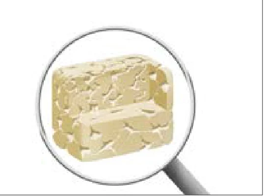
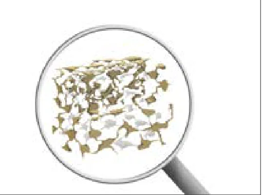
This is the main difference between it and a CAD/CAM composite. In a composite, the filler particles are dispersed separately inside the resin, but in Enamic the ceramic itself is a unified framework and the polymer only fills its empty space.
∆ Where to use it and where not to
Its strength (flexural strength) is lower than that of lithium disilicate. For this reason the manufacturer has approved it only for single-unit restorations, namely crowns (including on implants), inlays, onlays, veneers and table tops. A table top is an occlusal veneer, that is, a thin restoration that covers only the occlusal surface of a posterior tooth and is used for worn teeth or for increasing the vertical dimension. Bridges, cantilevers and patients with bruxism are not among its indications.
In return, its stiffness (elastic modulus) and hardness are lower than those of common ceramics and closer to dentin. For this reason its thin margins chip less, it is easy to adjust and polish in the mouth, and it wears the opposing tooth less.
∆ Preparation
The preparation this material requires is small, and for that reason it is a good option when you do not want to remove much tooth structure. The minimum thicknesses set by the manufacturer are as follows:
| Type of restoration | Minimum thickness |
|---|---|
| Anterior crown | Incisal 1 mm, circumferential 0.8 mm |
| Posterior crown | Occlusal 1 mm, circumferential 0.8 mm |
| Inlay, onlay, table top | 1 mm |
| Veneer | Labial and incisal 0.3 mm, cervical 0.2 mm |
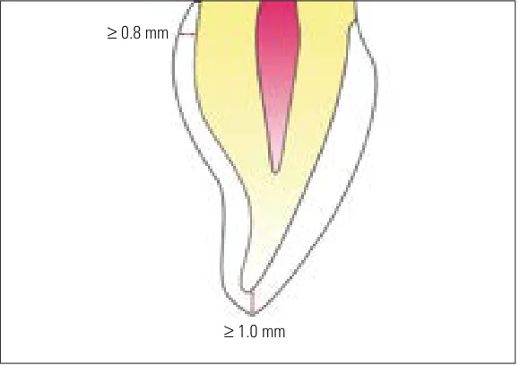
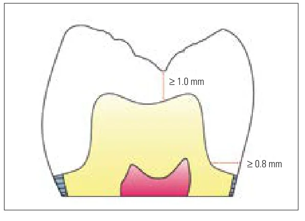
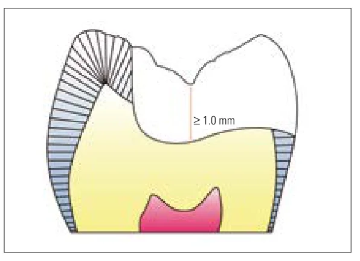
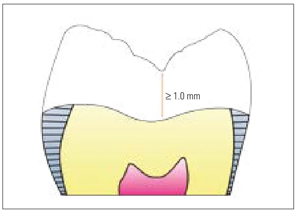
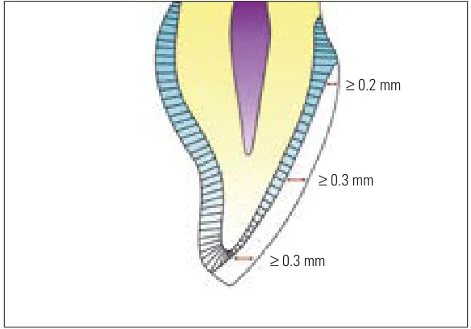
∆ Which block to ask for
Enamic blocks are produced in three grades of translucency: T (Translucent, normal translucency), HT (High Translucent, high translucency) and ST (Super Translucent, very high translucency). The more translucent the block, the more the color of the underlying tooth shows through it. So if the stump is dark, for example a metal core or severe discoloration, ask the laboratory for a T block, which has more masking power. For an ordinary crown and veneer, HT is used, and ST is mostly for inlays, onlays and table tops, which must blend in with the color of the surrounding tooth.
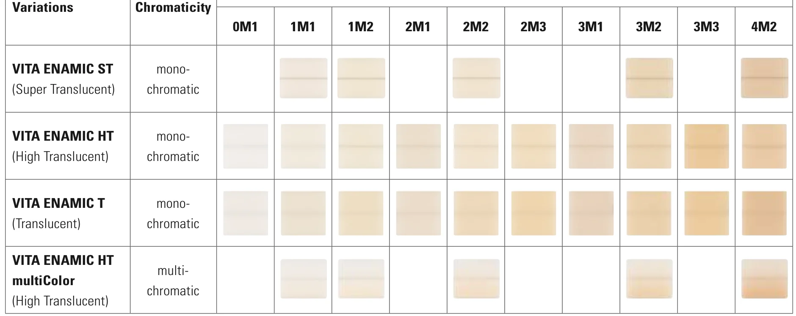
∆ Try-in, adjustment and polishing
When trying in and adjusting the occlusion, work only with a diamond bur, with water and with light pressure, because a tungsten carbide bur may damage the material. Wherever it has been ground, it must be polished again, because a rough surface both loses its gloss and picks up stain sooner. Polishing has two stages: first a pink polisher with water, then a gray diamond-impregnated polisher with light pressure. If you use Sof-Lex discs, use only the medium and extra-fine discs. Acetone-containing cleaners also must not come into contact with the restoration.
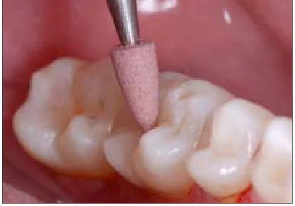
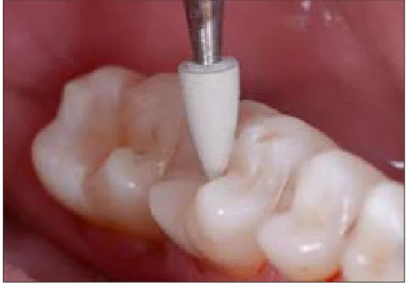
∆ Cementation
This material must always be cemented with a resin cement. The inner surface of the restoration is first cleaned with ethanol, then etched with 5 percent hydrofluoric acid for 60 seconds. The acid dissolves only the ceramic part, and this creates the micromechanical retention. Then the surface is fully rinsed and dried, and silane is applied. Do not clean the etched surface with a brush, because it becomes contaminated.
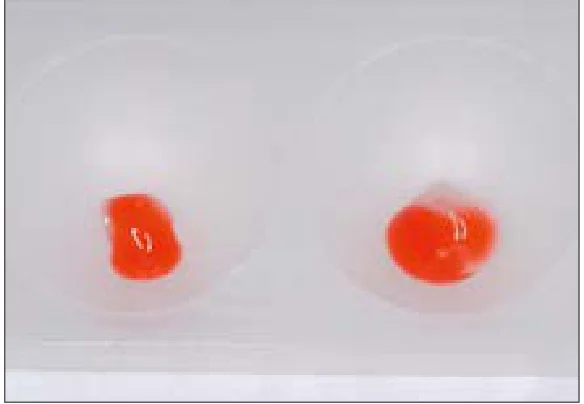
A self-adhesive cement is acceptable only for crowns, and inlays, onlays, table tops and veneers must be cemented with a full adhesive system. For a thin veneer, a light-cure cement is also better, because a dual-cure cement may later shift the color slightly toward yellow.
∆ Laboratory and adding composite
This material is never placed in a furnace, because its polymer part is destroyed at furnace temperatures. Its staining in the laboratory is done with light-cured stain. If you later need to add composite to it in the mouth, do not use hydrofluoric acid. Roughen the surface with a diamond bur or sandblasting, and then apply silane and bonding agent.
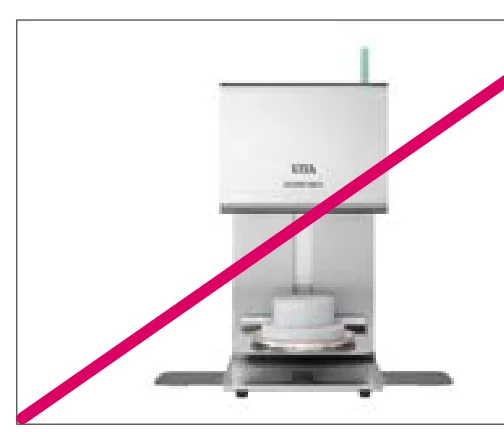
∆ An example from the brochure
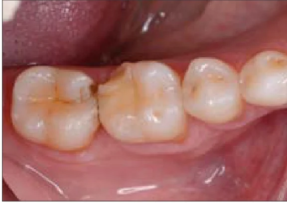
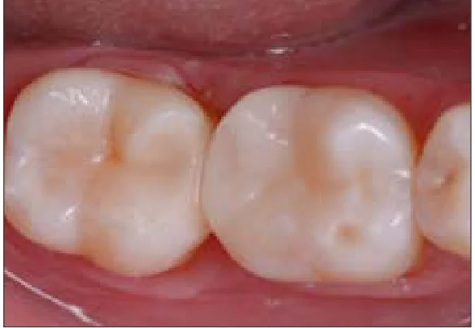
The points above are written on the basis of the manufacturer's (VITA) instructions and general explanations about this group of materials, and are not taken from clinical studies.